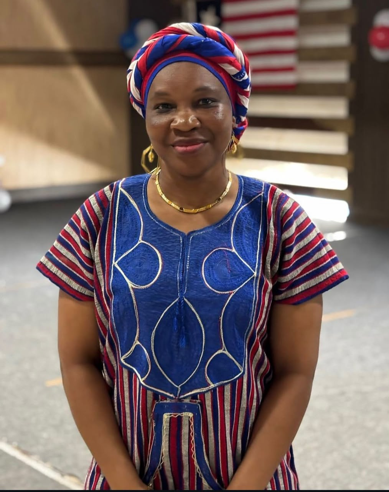
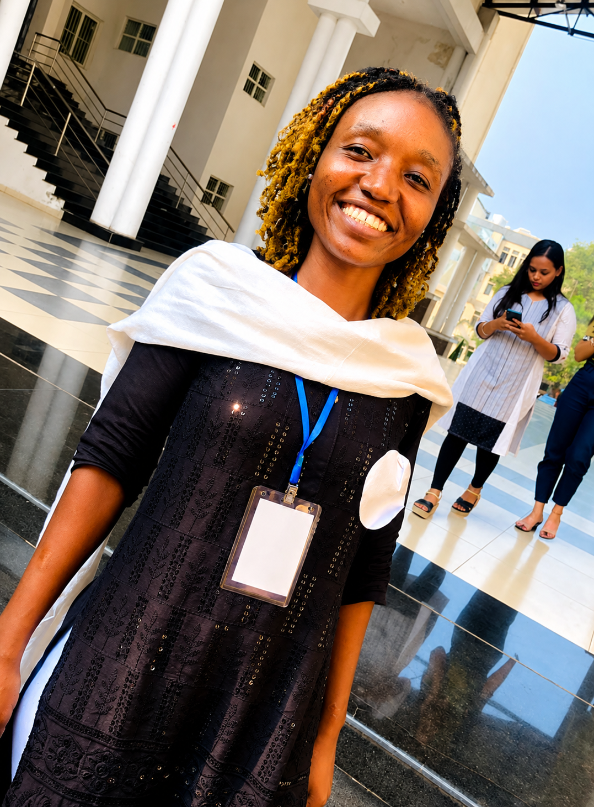
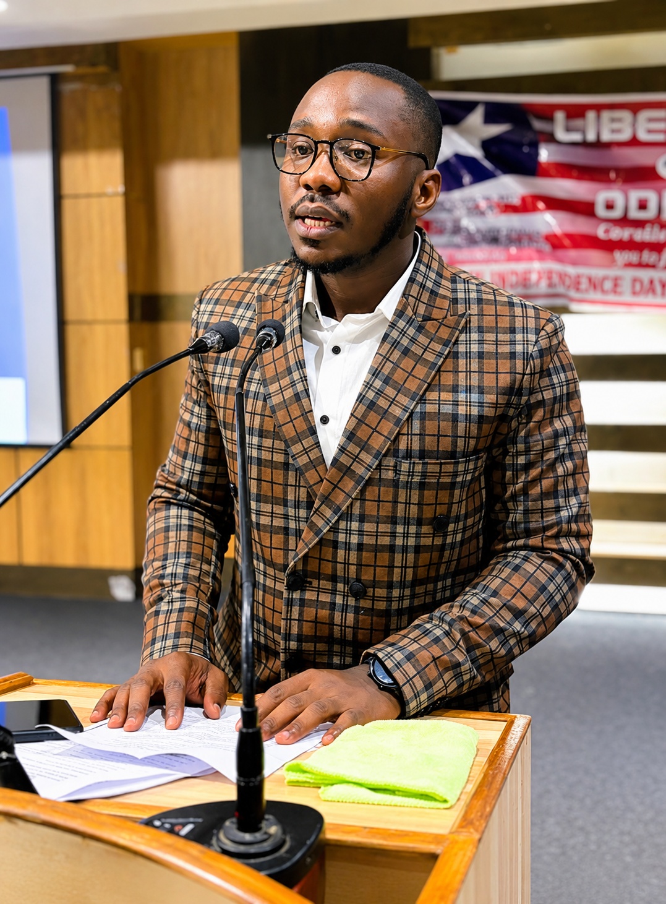
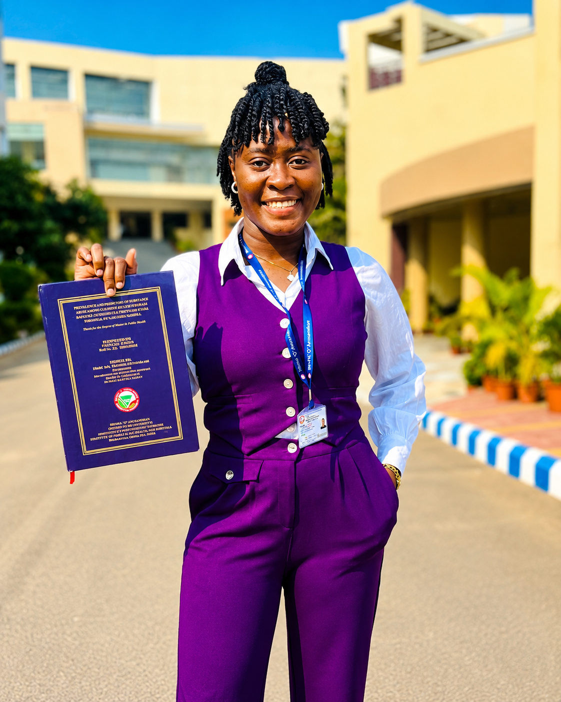

Our Distinguished Alumni
Honoring the leaders and members who have paved the way for our union's success.

Ms. Metee S. David
Program Directress
Master of Business Administration
Finance and Marketing
Contributions to the Union: Mis. David served as the Program
Directress, leading initiatives to enhance the academic and professional development of this
union. Aside her position as the Program Directress, she acted as a mother, sister, and friend
to members during her time.
Her delication and commitment to the union's mission has left
a lasting impact, fostering a culture of mentorship and support that continues to benefit
current and future members.

Ms. Esther Flomo
Vice President Emeritus (SOA)
Master of Public Health (MPH)
Contributions to the Union: Mis. Flomo was one of the founding member of the SOA Chapter, she has been instrumental in working with new students. She worked closely with the leader at SOA Chapter to forster unity and collaboration among members. Her dedication to the union's mission and her ability to inspire others have left a lasting impact on the community.

Mr. Wellington S. Harris
President Emeritus (CV Raman)
Bachelor of Business Administration
Contributions to the Union: Mr. Harris served as the President of the CV Raman Chapter, where he played a pivotal role in shaping the chapter's direction and initiatives. His leadership was marked by a commitment to fostering a sense of unity and upholding the Union's values. His contributions to this union is one of the most significant.

Mr. Hezekiah D. Jorkeah
President Emeritus (KIIT)
Master of Agribusiness Management
Contributions to the Union: Mr. Jorkeah served as the President
of KIIT Chapter, also as the Superintendent of Odisha and Madhya Pradesh at the level of All
Liberian Student in India (ALSI). He has contributed significantly to the growth and
development of the union, fostering a culture of collaboration and excellence. His
leadership has left a lasting legacy that continues to inspire current and future members.
Sadly Mr. Hezekiah D. Jorkeah has passed and his legacy will always be remembered and
cherished by the union.
Ms. Rena Welson
Former Member
Chemical Engineering
Contributions to the Union: Ms. Wilson as been one of the outstanding member who have contrubuted to the growth and development of this Union. Her delegation to unity and excellence has been a great contribution to the union and its members. Over the years she give her all to the union and its members, she has been a great friend to many members.

Ms. Naomi G. Garlo
Former Member
Master of Public Health (MPH)
Contributions to the Union: Ms. Garlo was a member who fill in evey given position, her delegation to the union was remakable and she has been a great friend to many members. Her contributions to the union have been significant and her endless effort and unwaivering support have been invaluable.
Mr. Rufus N Borleh, Jr
Former Election Commission
Master of Business Administration
in Rural Management
Contributions to the Union: Mr. Borleh is a remakable member of the LSUO who has contributed significantly to the growth and development of the community. During his time as Chairperson of the election commission committee, he ensure that the union have it first democratic election, he also serve as the captain of the soccer team,his role played during his time with the union is truly remakable.